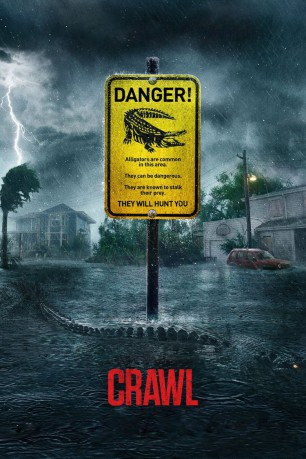

#11826 Crawl
 gesehen am 02.10.2019
gesehen am 02.10.2019
 
 IMDB-Wertung: 6.3 / 10
IMDB-Wertung: 6.3 / 10  Tomatometer: 82
Tomatometer: 82  Metascore: 60
Metascore: 60 
Ein heftiger Sturm trifft auf die Küste Floridas und zwingt die Bewohner zur Evakuierung. Der Bundesstaat hat nämlich eine Kategorie fünf Hurricane-Warnung herausgegeben. Die junge Haley Keller (Kaya Scodelario) vermisst aber ihren Vater Dave (Barry Pepper) und ignoriert die Warnung daher, um nach ihm zu suchen. Sie findet ihn schließlich verletzt im Keller seines abgelegenen Hauses in Coral Lake, eingeschlossenen von den Fluten. Diese steigen immer höher und höher und die Zeit wird knapper, dem Hurricane zu entkommen. Doch bald müssen Vater und Tochter feststellen, dass es noch eine weitaus größere Gefahr gibt, der sie sich stellen müssen, denn in ihrer Stadt lebt etwas ungeheuer Böses. Es sind riesenhafte Alligatoren, die sich im Wachstum befinden, und die unglaublichen Hunger haben. Nun gibt es kein Entkommen und keine Rettung mehr.
Jahr: 2019
Dauer: 87 Minuten
FSK: 16
Land: USA Studio: Paramount PicturesTonspuren: DD5.1 - ,
Untertitel: Deutsch, Englisch,
Auflösung: 1080p (1920x804) Größe: 7700 MB
Genre: Action, Thriller, Horror, Drama
Regisseur: Alexandre Aja
Drehbuch: Michael Rasmussen, Shawn Rasmussen
Soundtrack: Max Aruj, Steffen Thum
Darsteller:
 Kaya Scodelario als Haley
Kaya Scodelario als Haley Barry Pepper als Dave
Barry Pepper als Dave Morfydd Clark als Beth
Morfydd Clark als Beth- Ross Anderson als Wayne
- Jose Palma als Pete
- George Somner als Marv
- Anson Boon als Stan
- Ami Metcalf als Lee
 Colin McFarlane als Governor
Colin McFarlane als Governor- Annamaria Serda als Emma
- Tina Pribicevic als Young Haley
- Srna Vasiljevic als Louie
- Cso-Cso als Sugar
- Savannah Steyn als Lisa
- Jovana Dragas als Susan (uncredited)
- Christopher Landry als Coach (uncredited)
Datei: X:\2019(A-F)\Crawl (2019, FSK16, 1920x804).mkv seit 30.09.2019
Festplatte: HD 2018(G-Z)-2019(A-Z)
 Es gibt insgesamt 60 Filme in der Gruppe '2019(A-F)'
Es gibt insgesamt 60 Filme in der Gruppe '2019(A-F)'